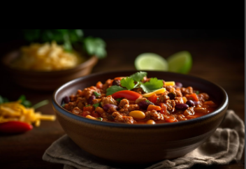

Frijoles

Descripción
Los frijoles son un pilar de la gastronomía colombiana, conocidos por su sabor intenso y su versatilidad. Acompaña tus comidas con este clásico y aprende a prepararlo en casa de manera fácil y rápida. Nuestra receta te guiará para lograr unos frijoles llenos de sabor, perfectos para cualquier ocasión. ¡No te pierdas este imperdible de la cocina colombiana!
Ingredientes
- 3 tazas de frijoles cargamanto o pintos3 tazas de frijoles cargamanto o pintos
- ½ libra de pezuña de cerdo
- 6 tazas de agua
- 1 taza de zanahorias ralladas
- 1 diente de ajo, picado
- ¼ taza de cebolla larga picada
- 2 tazas de tomates cortados en cubitos
Instrucciones
- Lava muy bien los granos de frijol y deja remojando desde la noche anterior en agua fría.
- Escurre los frijoles y llévalos a tu olla a presión con agua y las pezuñas, a fuego medio-bajo hasta que estén blandos.
- Cuando los frijoles estén casi tiernos, agrega el guiso para darle sabor e iniciar la cocción completa. Puedes dejarlos hirviendo a fuego lento.
- Pica el plátano verde manualmente.
- Acompáñalos con aguacate y arroz blanco.